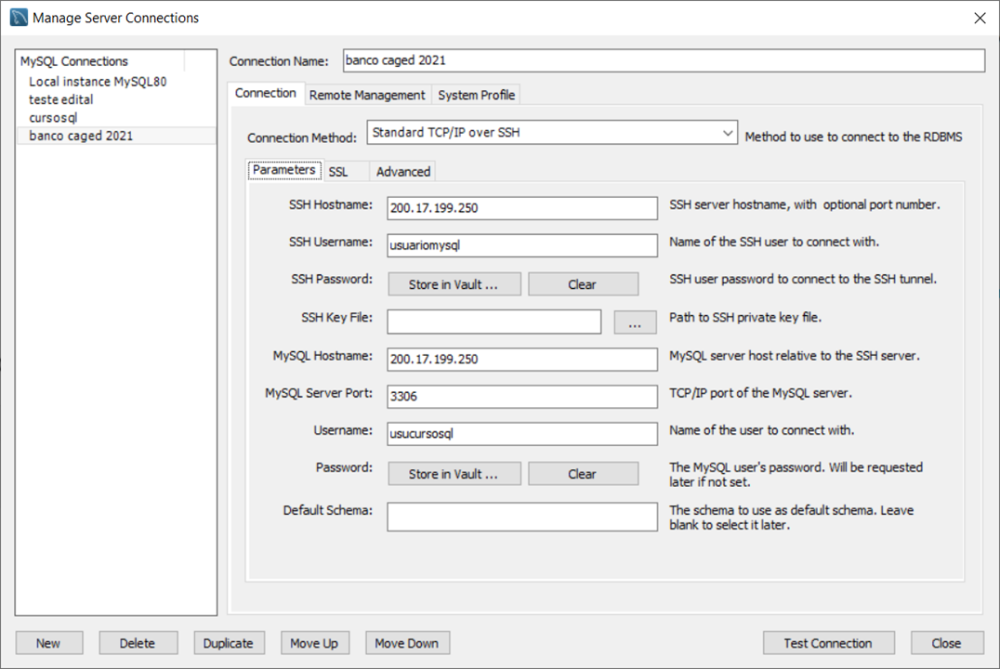

Conexão com MySQL de testes
Para executar os exercícios G1 você precisará ter: SQL Workbench instalado no seu computador.
Se for acessar remotamente, crie uma conexão:
- Host: 200.17.199.250
- ssh username: usuariomysql
- senha: 3ng4mslo@04Wja92Ts(4hf84
- username: usucursosql
- senha: ma52wsQy1ael%6s&nHa12345
Sugestão: volte para os exercícios G1.